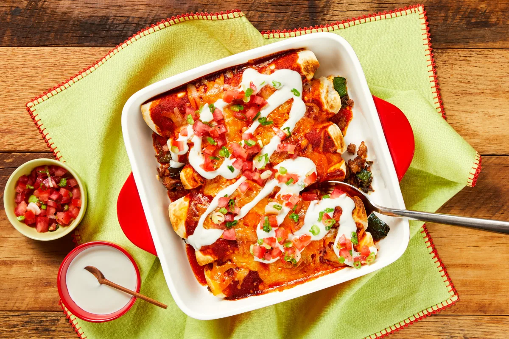

Pork & Pepper Enchiladas

Pork and Pepper Enchiladas with Pico de Gallo & Lime Cream
Saucy, smothered, hearty, and delicious: This enchilada bake has everything you could possibly want. You’ll start by wrapping tortillas around a filling of spiced ground pork and sautéed bell pepper, then coating the bundles with a healthy glug of zesty tomato sauce and a sprinkle of Mexican cheese. Bake until piping hot and bubbly, then top with lime crema and pico de gallo and dig into all that deliciousness.
Ingredients
- Roma Tomato
- Scallions
- Lime
- Green Bell Pepper
- Sour Cream
- Ground Pork
- Tex-Mex Paste
- Southwest Spice Blend
- Flour Tortillas
- Mexican Cheese Blend
- Tomato Paste
- Kosher Salt
- Pepper
- Cooking Oil
Steps
- Prep - Adjust rack to top position and preheat oven to 475 degrees. Wash and dry all produce. Dice tomato. Trim and thinly slice scallions. Quarter lime. Core, deseed, and dice bell pepper into ½-inch pieces.
- Make Pico & Creama - In a small bowl, combine tomato, scallions, a drizzle of oil, and juice from 1 lime wedge (2 wedges for 4 servings). Season with salt and pepper. In a separate small bowl, combine sour cream with lime juice to taste. Add water 1 tsp at a time until mixture reaches a drizzling consistency. Season with salt and pepper.
- Make Filling - Heat a drizzle of oil in a large pan over medium-high heat. Add bell pepper, salt, and pepper; cook until just softened, 4-5 minutes. Add another drizzle of oil to pan. Add pork*, half the Tex-Mex paste, half the Southwest Spice (you’ll use the rest of each later), salt, and pepper. Cook, breaking up meat into pieces, until pork is browned and cooked through, 4-6 minutes. TIP: If there’s excess grease in your pan, carefully pour it out. Turn off heat.
- Assemble Enchiladas - Place a small amount of filling on one half of each tortilla. Roll up tortillas, starting with filled sides, to create enchiladas. Place seam sides down in an 8-by-8-inch baking dish (9-by-13-inch baking dish for 4 servings) or an ovenproof pan.
- Make Sauce & Bake - In a liquid measuring cup or bowl, combine ½ cup water (¾ cup for 4 servings), tomato paste, remaining Tex-Mex paste, and remaining Southwest Spice. Pour sauce over enchiladas to thoroughly coat. Sprinkle with Mexican cheese. Bake on top rack until sauce is bubbly and cheese has melted, 3-5 minutes.
- Serve - Top enchiladas with lime crema and pico de gallo. Divide between plates and serve with any remaining lime wedges on the side.